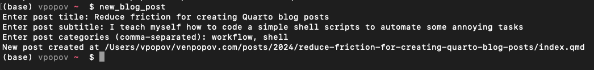

![]()
My relationship with blogging is complicated. I made my first blog about 15 years ago, fresh out of high school. WordPress was the dominant platform at the time, and my blog wasn’t anything particularly interesting - I shared some vapid attempts at poetry and short story writing, some travel logs, and a mish-mash of other topics1.
I have never liked WordPress, for mostly the same reasons that I don’t like most software - I found every action incredibly cumbersome. Shortly thereafter I joined Facebook and Twitter, two platforms I no longer use, and most of my writing took on the “micro-blogging” nature that social media lends itself to so easily. I’ve always suspected that one of the reasons social media blew up was that it made it so easy to write, share, and follow content. At some point during my PhD (circa 2017), I created another WordPress blog, out of a desire to write longer pieces on more technical topics. That blog was again short-lived and the reason was simple - I wanted to write about programming, data analysis, and R, to share computational insights, but WordPress was a poor medium for it. At the time I was just starting to get enamored with literate programming (Jupyter notebooks were hot off the press), and the ease with which I could create computational writing contrasted starkly with the difficulty of sharing such writing on the internet.
Last year I discovered Quarto and I immediately became excited by the possibilities. I rebuilt my personal website with it and set up this blog to go with it. I expected to post a lot more often than I have done in reality. There are many reasons for this - from starting a new tenured position, to being a typical overworked, overextended, and overcommitted academic.
While I can’t do anything about that, I realized that one mental barrier arose every time I considered making a new post. Despite how easy Quarto makes it to publish technical material, there are a number of steps, at least in the way I have currently set up my system, that are just busywork, which I have to do any time I want to create a new post:
- navigate to my website directory on my computer
- make a new sub-folder in the
postsdirectory to hold the files for the blog post - create an
index.qmdfile in the new folder with a specific front matter boilerplate - write the post
- execute
quarto renderto view it - commit and push my changes to update the website
For some reason, the first three steps, as small as they appear, were a mental barrier that stopped me from even beginning new posts. Ideally, I want this to be as simple as possible. So I decided to write a bash script that automates it.
A bash script for automating post creation
The problem was that aside from some basic commands, my bash knowledge is quite limited. So I figured this was an opportunity to put Github Copilot to the test. I use Visual Studio Code as my IDE, and have setup my website repository as a workspace. I already had a markdown document that describes in plain language the steps I need to do when creating new blog posts2. So could the built-in Copilot in VSCode write me a bash script just by being told to implement the steps I’ve described in my little instruction manual?
It worked flawlessly, and this code was the result after a few iterations:
#!/bin/bash
# Prompt for post details
read -p "Enter post title: " title
read -p "Enter post subtitle: " subtitle
read -p "Enter post categories (comma-separated): " categories
# Convert title to a slug for the folder name
slug=$(echo "$title" | tr '[:upper:]' '[:lower:]' | tr -cd '[:alnum:] ' | tr ' ' '-')
# Create the new post directory
year=$(date +%Y)
post_dir="$HOME/venpopov.com/posts/$year/$slug"
# Check if the directory already exists
if [ -d "$post_dir" ]; then
echo "Error: The directory $post_dir already exists."
exit 1
fi
mkdir -p "$post_dir"
# Get today's date
date=$(date +%Y-%m-%d)
# Append the current year to the categories list
categories="$categories, $year"
# Create the .qmd file with the provided metadata
cat <<EOF > "$post_dir/index.qmd"
---
title: "$title"
subtitle: "$subtitle"
categories: [$(echo "$categories" | sed 's/,/, /g')]
date: "$date"
---
EOF
echo "New post created at $post_dir/index.qmd"
# Open the new post in the default editor
code "$post_dir/index.qmd"I saved this code in a file new_blog_post and Copilot instructed me that I can make it executable from the command line by first setting file permission via:
chmod +x new_blog_postI saved this file in a directory on my path, so now when I want to create a new blog post, I simply open a terminal and type
new_blog_postThis prompts me to enter a title for the post, a subtitle and some tags, then creates all the necessary boilerplate and opens the file in VSCode for editing. In fact, I used it to make this very post, and for example, here is the terminal output from it

Neat. Will this help me post more often? Time will tell.
Postscript: AI and learning to code
I tell my students that they can use AI tools when working on projects, but I urge them that it is still important to learn how to code for many reasons. They need to understand what the code is doing, at the very least, and know how to fix it. Did I follow my own advice here? Ugh, maybe not, depending on the perspective. I still have no idea about the core bash syntax and how to write a script from scratch. But I do have a “lifetime” of experience with programming, and I could understand what the script was doing, and I could modify it to suit my needs. I think that’s the important part. I don’t need to know everything about bash scripting, but I need to know enough to be able to use it effectively. In any case, I have a tendency to fall into rabbit holes when learning new things, and this is the last thing I want to do right now while trying to optimize my workflow! So, I have a working script, I asked Copilot to add some reasonable checks that occurred to me, and I know what each line does, even if I don’t know how to write it from scratch. I think that’s good enough for now.
Footnotes
To my huge surprise, the blog still exists! The last entry is from 2013, and I hadn’t looked at it probably since then. I only rediscovered it now while writing this post.↩︎
I write these types of “Notes to self” instruction manuals for many things, because my memory is very poor for procedural operations↩︎
Reuse
Citation
@online{popov2024,
author = {Popov, Vencislav},
title = {Reduce Friction for Creating {Quarto} Blog Posts},
date = {2024-11-17},
url = {https://venpopov.com/posts/2024/reduce-friction-for-creating-quarto-blog-posts/},
langid = {en}
}